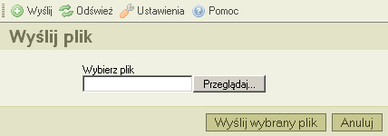

Przycisk wyЕ›lij* umieszczony w pasku narzД™dzi, otwiera okno do wysyЕ‚ania plikГіw, ktГіre sЕ‚uЕјy do dodawania nowych plikГіw do otwartego w danym momencie katalogu. PoniЕјej przykЕ‚adowy zrzut ekranu:

W celu zamkniД™cia okna, kliknij na przycisk "Anuluj" albo kliknij ponownie przycisk "WyЕ›lij" w pasku narzД™dzi.
* "wysyЕ‚anie" pliku to inaczej transfer pliku z Twojego komputera (lokalnego) do komputera centralnego, na ktГіrym uruchomiony jest CKFinder (serwera).
Nstępujące komunikaty mogą zostać wyświetlone po wysłaniu pliku:
Oznacza to, Ејe plik o danej nazwie juЕј istnieje w danym katalogu. W celu unikniД™cia konfliktu, kolejny numer porzД…dkowy zostaЕ‚ dodany do oryginalnej nazwy pliku "(1)".
WysЕ‚any plik nie zostaЕ‚ zaakceptowany.
Najczęstszym powodem, jest takie skonfigurowanie CKFindera przez administratora, aby zezwalać na pliki tylko z wybranymi rozszerzeniami. Rozwiązanie to ma na celu zabezpieczenie serwera przed wysłaniem niedozwolonych plików. Innym powodem może być przekroczenie dozwolonego rozmiaru pliku wysłanego na serwer. W takim wypadku, serwer powinien zostać tak skonfigurowany przez administratora, aby dopuszczał pliki o większych rozmiarach.
Przesłany plik zawiera kod HTML. Z powodów bezpieczeństwa, tylko pliki z wybranymi rozszerzeniami mogą zawierać kod HTML.
Prosimy o kontakt z administratorem w celu uzyskania informacji plikГіw, ktГіre sД… akceptowane przez CKFindera oraz dopuszczalnego limitu rozmiaru pojedynczego pliku.